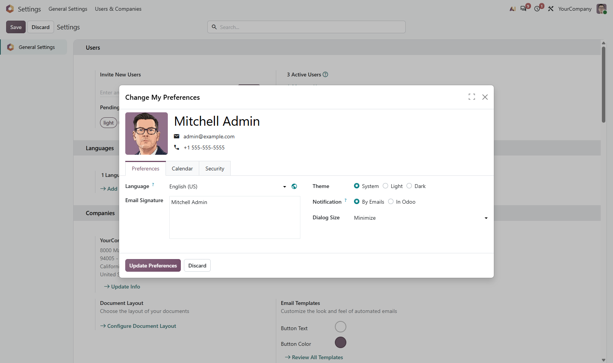
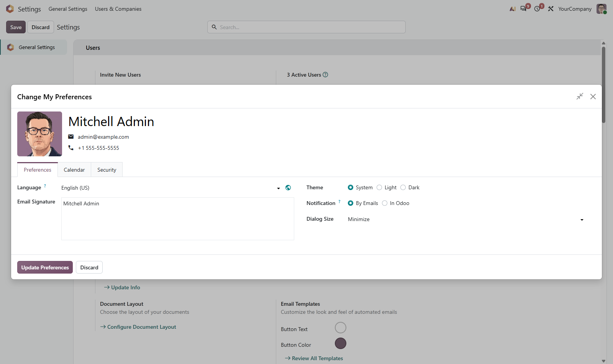

A control in the header of every dialog to fill the window and come back again — and a preference, per user, for how they open in the first place.
Odoo puts a size control on the mail composer. This one is in the header of every dialog that has room to grow.
Whoever wants dialogs full screen sets it in their own preferences. Nobody else's Odoo changes.
A confirmation keeps the compact frame Odoo gives it. Only dialogs with something to show get the control.

Nothing to configure before it works, and no shortcut to remember. It is in the header of the dialog you already have open.
One click and the dialog takes the whole width, so a long form stops scrolling inside a narrow box.
Clicking again returns the dialog to the size it was opened at, not to a size of the module's choosing.
Writing an email, or picking from a long list of records, are the two that need the room most. Both have it.
A yes-or-no prompt is left exactly as Odoo draws it. The control appears on the dialogs that hold a form.

Clicking the control every time gets old. The Dialog Size field in My Preferences decides how dialogs open from then on: Minimize for the sizes Odoo intended, Maximize to start full screen. It is a field on the user, so one person working on a laptop and another on two monitors do not have to agree.
No system parameter, no group to assign. Install it and the control is there; the preference starts at Minimize for everyone.
What you get for free, and what has to be paid work.
Issues and merge requests are welcome on the public repository. They are read — but no response time is promised.
A size rule of your own, or a fix on a deadline, is paid work — quoted up front. Write to sale@mukit.at.
LGPL-3. Use it, change it, ship it inside your own work — no licence key, no database count.
Modules written for your process, on your Odoo version.
Odoo joined up with the systems you already run.
Hosting, deployment and upgrades you do not have to watch.
Your team taught the parts of Odoo they actually use.
An agreement, so an answer does not depend on who is free.
Odoo.sh or on-premise, Community or Enterprise.
One field, Dialog Size, in My Preferences. Nothing global.
Depends on mail alone, nothing external.
The control in any dialog header, or My Preferences for how they open.
One selection field on the user, carried over as it stands.
MuK IT GmbH, Vienna. Author and maintainer.
Tell us which dialogs your teams spend their day in, and we will tell you which ones want the room and which ones want to be a full screen instead. MuK IT — Austrian Odoo partner, Vienna.